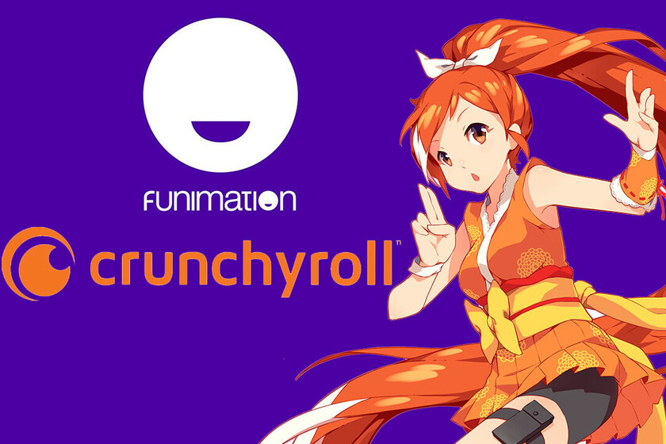
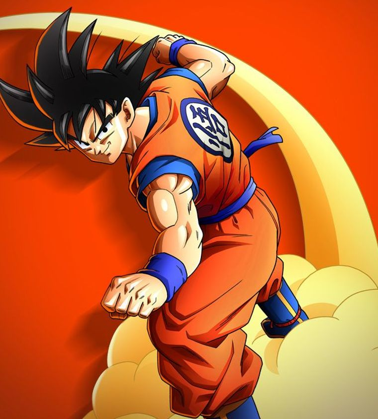
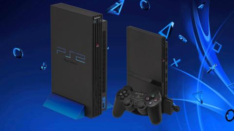
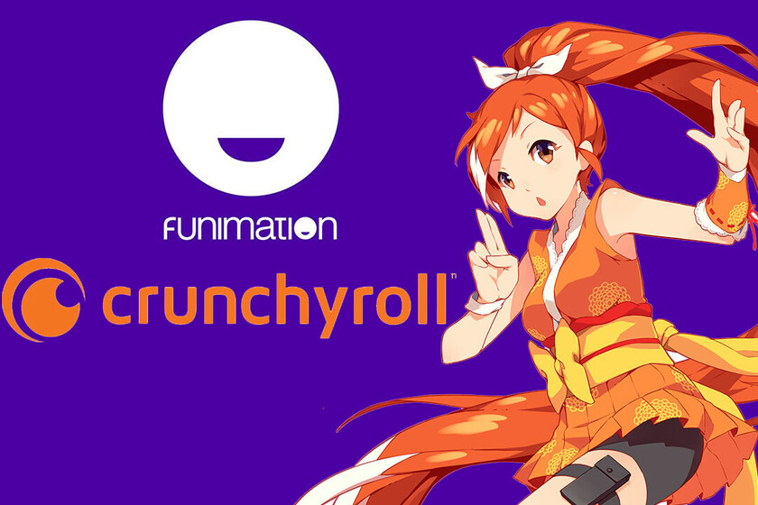
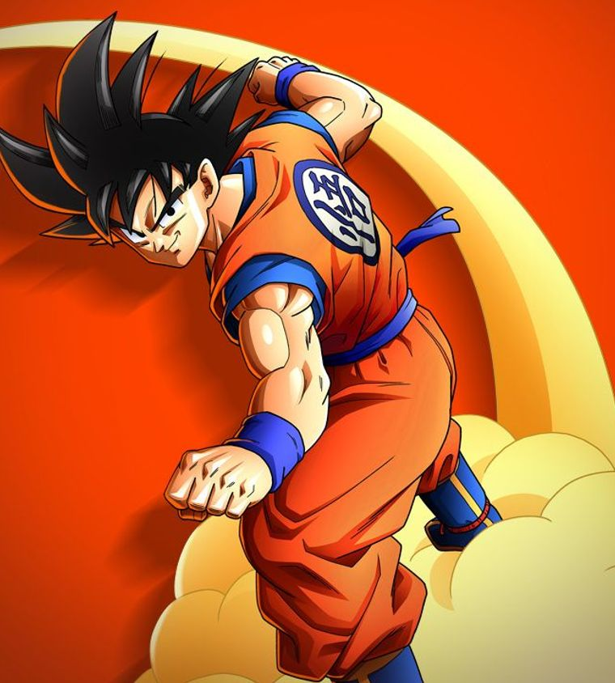
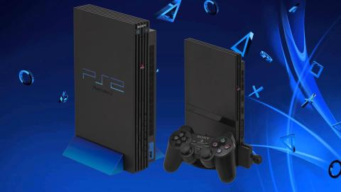

3.1. Imagen de musica

3.3. Imagen de un servicio de anime

3.5. Imagen de serie de television

3.7. Consola PS2
3.1. Imagen de musica

3.3. Imagen de un servicio de anime

3.5. Imagen de serie de television

3.7. Consola PS2
 3.9. Consola XBOX ONE
3.9. Consola XBOX ONE
Desde que nosotros tenemos memoria siempre tenemos una manera de pasar el tiempo y estos con el tiempo van cambiando de manera constante conforme cambia nuestra edad, un dia nos gusta jugar con jugetes y al otro solo nos gusta salir con amigos, aun asi, hay algunos pasatiempos de los cuales yo pienso que llegaron para quedarse, como jugar videojuegos que para algunos es comun empezar por la pubertad y no terminar de jugarlos incluso cuando se casan o tienen hijos, asi que ahora les voy a hablar de algunos de mis pasatiempos que yo pienso que llegaron para quedarse.
Musica
La musica fue algo que descubri en la preparatoria, esto fue gracias a que durante mi primer semestre me habia intersado en la rondalla, pero lamentablemente nunca me anime a ir de manera formal, no fue sino hasta tercer semestre que un amigo me invito a asistir ya que estaban pidiendo gente para guitarra lo cual era algo con lo que ya tenia un poco de experiencia asi que fui.
Algo que me gusto mucho de eso es que la rondalla no solo era un grupo musical, ya que, para mi fue como una familia, era algo que siempre me animaba a seguir con las clases y salir lo mas rapido posible e ir a tocar con todo el grupo, si nos tocaba suerte alcanzabamos a los del grupo de la tarde.
Algo que tambien me agrado mucho fue la manera en que nos desenvolviamos todos dado que es un grupo musical pienso que es ams comun que todos demostremos mas de lo que somos normalmente, tambien creo que esto me ayudo mas a desenvolverme con la gente y a hablar con mas personas las cuales no conozco.
Ahora aun cuando ya no pertenezco como tal a la rondalla, aun sigo asistiendo de vez en cuando a algunos eventos, a causad e que por culpa de la pandemia ya no quedan muchos integrantes que sepan canciones las cuales tocabamos nosotros en nuestro momento, lo que causa que tengamos que ir a tocar lo de las generaciones anteriores, esto ya se daba incluso en mi generacion pero en ese entonces era solo para eventos super inportantes.
Anime
El animer ahora esta muy de moda, sin embargo, para mi fue algo que agarre la maña de verlo desde que estaba en secundaria, esto comenzo por el hecho de que en mi infancia no me dejaban ver animes como Dragon Ball o Naruto lo que llevo a que en mi pubertad casi los empezara a ver y despues de eso me fui expandiendo hasta la fecha de hoy, donde estoy muy metido en programas, fandoms, entre otras cosas.
Videojuegos
Los videojuegos son algo que llevo jugando desde la primaria, al inicio lo unico que tenia eran juegos al estilo de los que venian 100 en 1 los cuales al mitad de ellos se repiten, despues de eso mi primera consola buena fue una Play Station 2 de la cual casi no llegue a tener juegos a causa de que en ese tiempo era muy niño y mis papás casi no invertian nada en eso, mas que en cosas para la casa la escuela, etc.
Despues de eso supe que habia otra consola mejor que esa la cual era la Play Station 3 asi que le dije a mi papá que vendiera la 2 y comprara la 3 y asi paso y la tuve mucho tiempo, al incio estaba bien y me divertia mucho, lo malo fue que despues de eso se descompuso poco a poco hasta que en algun momento dejo de funcionar totalmente e intentamos mandarlo a arreglar, lo malo es que despues de eso ya no supimos nada de el.
Despues de haber perdido la PS3 me di cuenta que habia salido una nueva generacion de consolas la cual fue la PS4 y el XBOX ONE asi que le pedi a mi papá una PS4 ya que ya habia tenido el 2 y el 3 por que no el cuatro, lo malo es que estaba muy cara asi que solo nos alcanzo para comprar el xbox, pero no imprtaba mucho ya que podiamos jugar casi a los mismos juegos y aun asi me beneficio mas ya que me trajo muchos amigos los cuales tambien jugaban con esta consola no solo en la secundaria sino que tambien en la prepa y no solo eso, sino que tambien despues empezaron a implemetar el crossplay lo que llevo a que puediera jugar con muchas personas de diferentes dispositivos lo que me llevo a poder a jugar con mas personas a diferentes juegos.
Despues tambien me interese por las PC Gamers lo malo es que nunca tuve dinero asi que nunca me pude comprar o hacer una, aun cuando tengo el conocimiento para hacerla, despues de un tiempo mi hermano compro una PC medio buena, lo que me dejo poder jugar juegos de gama media con mis amigos y poder hacer cosas de programacion con mas libertad y con menos tiempo de espera por que los dispositivos de gama baja me diejaron un mal sabor de boca en la prepa cuando se tardaban como media hora en correr un programa.
Programación
La programacion es algo que descubri desde que entre en la preparatoria, es algo que me habia llamdo la atencion desde la primaria pero no la experimente de verdad hasta que la vi de buena manera en la preparatoria, aunque al principio era solo ver diagramas y de mas, las cosas fueron avanzando y con el tiempo me fue gustando y me termino agradando mas de lo que pensaba y ahora que estoy en la facultad pienso que quizas ahora me atrae mas y que porbablemente me vaya a meter a la programacion de inteligencia artificial pero eso es ya para el futuro.
 3.4. Imagen de muchas series de anime
3.6. Imagen de una serie de television
3.4. Imagen de muchas series de anime
3.6. Imagen de una serie de television
 3.8. Imagen de PS3
3.8. Imagen de PS3
 3.10. Imagen de codigo de programacion.
3.10. Imagen de codigo de programacion.